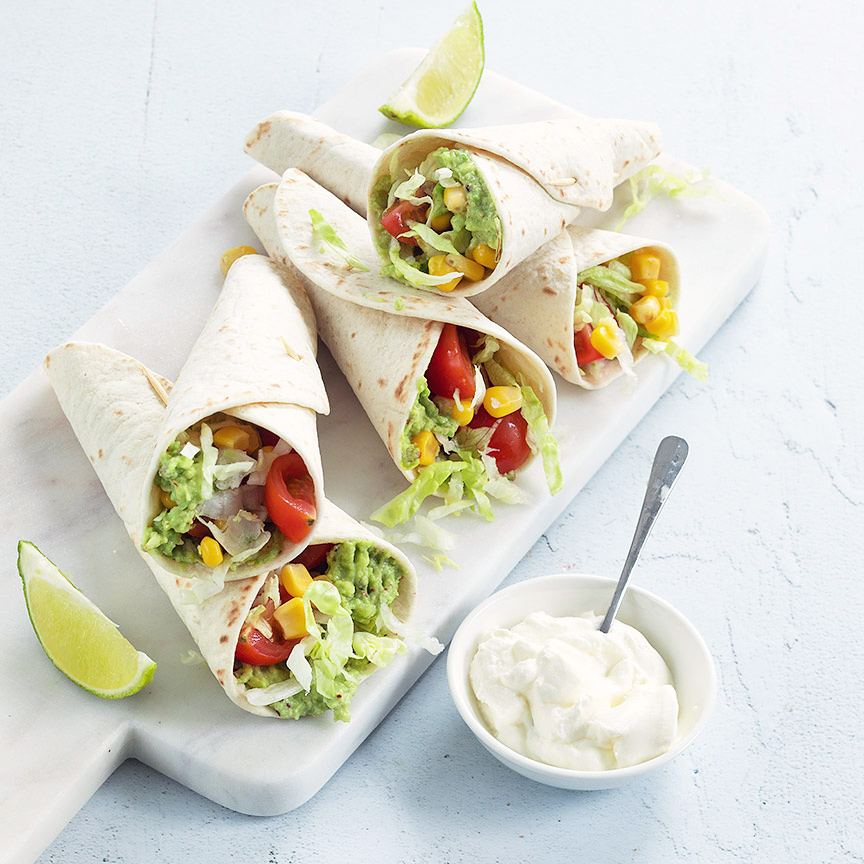

voor gerecht
____________________________________________________________________________________________
deze mini wrap hoorntjes zijn een lekker en gezond hapje met romige avocado en een Mexicaanse salade, lekker als tussendoortje of borrelhapje
ingredienten
8 mini wraps
2 avocado’s
1 limoen
Snuf chilipeper
peper en zout
Handje ijsbergsla
1 klein blikje mais
8 cherry tomaatjes
125 ml zure room(als saus)
prikkers
bereidingswijze
- Snijd de avocado's doormidden en verwijder de pit en schil.
- Prak het vruchtvlees van de avocado fijn met het sap van de limoen, snuf chilipeper en peper en zout.
- Besmeer de mini wraps met het avocado mengsel, en houd 1 cm van de rand vrij.
- Rol de wraps op in de vorm van een hoorntje en steek ze vast met een prikkertje.
- Vul de hoorntjes met wat sla, mais, stukjes cherrytomaat en maak ze af met een lepeltje zure room.
gehaktbrood
na gerecht
